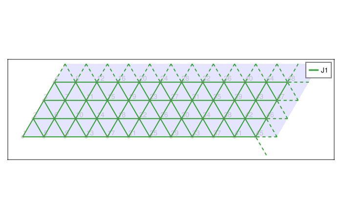
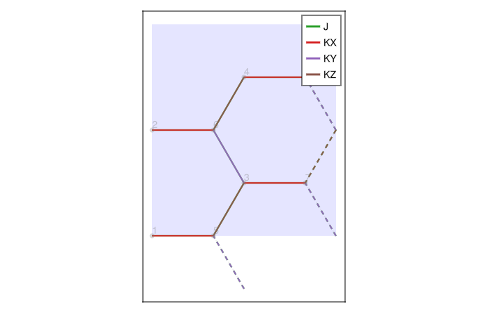
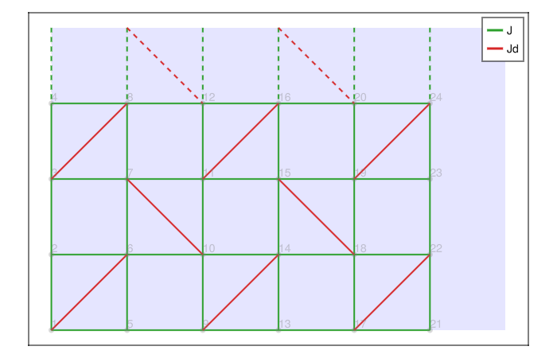
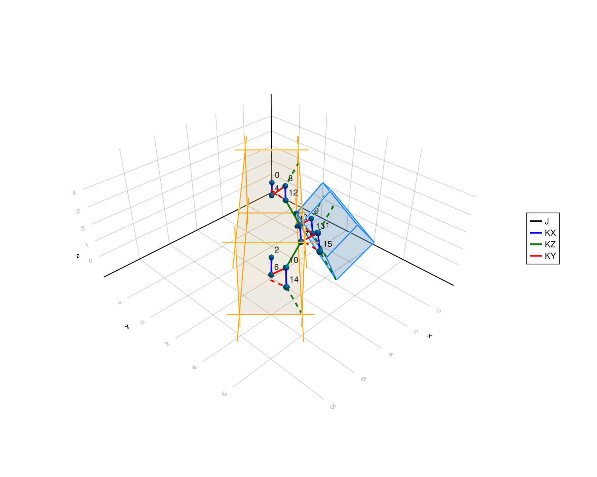
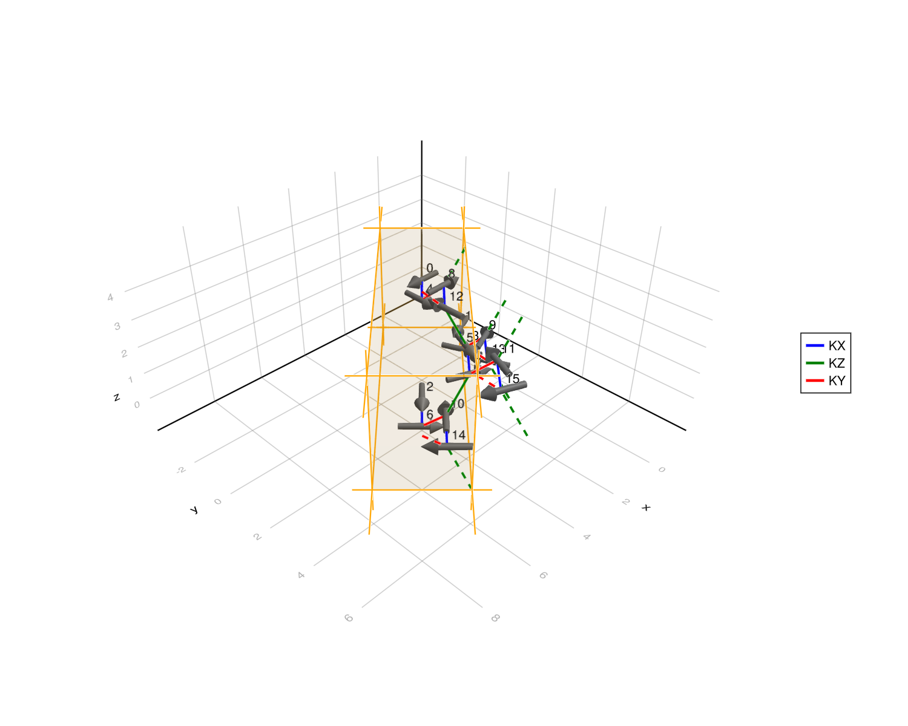

Examples
The scripts in the examples directory of the repository build clusters and models that have been used in practice. This page walks through them. The scripts start with using Revise for interactive development; install Revise or remove that line to run them.
All 2D examples below draw their result with a small helper that renders plot_opsum into a figure:
using Latlib
using GLMakie: Figure, Axis, DataAspect, hidedecorations!
function figure(H, fl)
f = Figure(size=(700, 450))
ax = Axis(f[1, 1], aspect=DataAspect())
plot_opsum(H, fl; ax=ax)
hidedecorations!(ax)
return f
endTriangular lattice
examples/Triangular/triangular.jl builds a $12 \times 4$ periodic cluster of the triangular lattice with a nearest neighbor Heisenberg model.
L = 12
W = 4
boundary = [L 0; 0 W]
fl = FiniteLattice(triangular, boundary, true)
H = OpSum()
H += neighbor_interaction("HB", "J1", fl; num_distance=1)
figure(H, fl)
Honeycomb lattice: Heisenberg-Kitaev model
examples/Honeycomb/honeycomb.jl defines several finite clusters of the honeycomb lattice through their boundary vectors, given as LatticeVectors. The Heisenberg-Kitaev model consists of an isotropic nearest neighbor coupling and three bond-dependent Kitaev couplings. The latter are added with lattice_interaction, which couples specific atoms of the unit cell in specific Bravais cells.
# 8-site cluster
fl_vecs = [
LatticeVector(honeycomb, [2, -2]), # t1
LatticeVector(honeycomb, [1, 1]), # t2
]
fl = FiniteLattice(fl_vecs, true)
H = OpSum()
H += neighbor_interaction("SdotS", "J", fl; num_distance=1)
H += lattice_interaction("SxSx", "KX", fl, 1, 2, [0, 0]) # 1st and 2nd site in the same unit cell
H += lattice_interaction("SySy", "KY", fl, 1, 2, [0, -1]) # 1st site in [0, 0] to 2nd site in [0, -1]
H += lattice_interaction("SzSz", "KZ", fl, 2, 1, [1, 0]) # 2nd site in [0, 0] to 1st site in [1, 0]
figure(H, fl)
The script writes the result with write_toml(fl, H, "honeycomb-N-8-ver-1.toml"; zero_based=true). The resulting TOML files for several cluster sizes are included in the examples/Honeycomb directory.
Shastry-Sutherland cylinder
examples/Shastry_Sutherland/shastry_sutherland.jl builds a cylinder of the shastry_sutherland lattice, which has four atoms per unit cell. The boundary is open along the first direction and periodic along the second. The sites are numbered column by column with order_xy. Besides the nearest neighbor coupling, the two dimer bonds per unit cell are added explicitly.
L = 6
W = 4
boundary = [L÷2 0; 0 W÷2]
fl = FiniteLattice(shastry_sutherland, boundary, [false, true]; atom_order=order_xy)
H = OpSum()
H += neighbor_interaction("SdotS", "J", fl; num_distance=1)
H += lattice_interaction("SdotS", "Jd", fl, 1, 4, [0, 0]) # dimer bond within the unit cell
H += lattice_interaction("SdotS", "Jd", fl, 3, 2, [1, -1]) # dimer bond to the cell at [1, -1]
figure(H, fl)
Hyperhoneycomb lattice: Kitaev model in 3D
examples/Hyperhoneycomb/hyperhoneycomb.jl collects finite clusters of the three-dimensional hyperhoneycomb lattice with 8 to 64 sites and defines the Heisenberg-Kitaev model on them. Interactions and the cluster are drawn interactively with plot_3d; the couplings are colored according to cpl_dict.
# 16-site cluster
fl_vecs = [
LatticeVector(hyperhoneycomb, [-1, 1, 1]), # t1
LatticeVector(hyperhoneycomb, [1, 1, -1]), # t2
LatticeVector(hyperhoneycomb, [-1, 1, -1]), # t3
]
fl = FiniteLattice(fl_vecs, true)
# Heisenberg interaction between all nearest neighbors
H = neighbor_interaction("SdotS", "J", fl)
# Kitaev interactions: X is the symmetry axis, Y and Z are interchangeable
H += lattice_interaction("SxSx", "KX", fl, 1, 2, [0, 0, 0])
H += lattice_interaction("SxSx", "KX", fl, 3, 4, [0, 0, 0])
H += lattice_interaction("SySy", "KY", fl, 2, 3, [0, 0, 0])
H += lattice_interaction("SySy", "KY", fl, 4, 1, [0, 1, 0])
H += lattice_interaction("SzSz", "KZ", fl, 3, 2, [0, 0, 1])
H += lattice_interaction("SzSz", "KZ", fl, 4, 1, [1, 0, 0])
f, ax = plot_3d(fl, H;
cpl_dict = Dict("KX" => :blue, "KY" => :red, "KZ" => :green, "J" => :black),
show_unit_cell = true,
annotate_sites = true,
annotate_sites_zero_based = true,
)
f
Periodic images of the cluster can be drawn with draw_periodic_flattice=true and selected with draw_periodic_flattice_shifts, see plot_3d.
Spin configurations in 3D
examples/spins_3d_plot/hyperhoneycomb_3d_spins.jl shows how to draw a spin configuration on top of a 3D lattice, for example the local magnetization obtained from a simulation. plot_3d accepts a vector of three-component spin vectors, one for each site in the order of atoms. The script reads the spins from an HDF5 file; here we use a spiral pattern for illustration.
N = length(atoms(fl))
spin_data = [[cos(2pi * k / N), sin(2pi * k / N), 0.0] for k in 0:N-1]
f, ax = plot_3d(fl, H, spin_data;
cpl_dict = Dict("KX" => :blue, "KY" => :red, "KZ" => :green),
annotate_sites = true,
annotate_sites_zero_based = true,
spin_length_multiplier = 1.5, # size of the spin arrows relative to the lattice
spin_color = :gray,
site_marksize = 0.0, # hide the lattice sites for better visibility of the spins
)
f